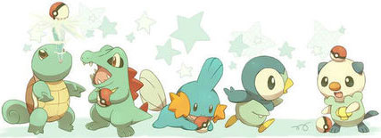

<
>
主角
小智(Satoshi)配音演员：松本梨香《精灵宝可梦》动画全系列主角，出身于真新镇，是个朝气蓬勃、热爱宝可梦的少年。持续旅行的他目标是成为宝可梦大师，最佳战绩是卡洛斯地区亚军。 |
 小智 小智
|
瑟蕾娜(Serena)配音演员：牧口真幸本作女主角，来自卡洛斯地方、热衷于新潮流的长发女孩，是小智在卡洛斯地方旅途中一起旅行的同伴。幼年时参加大木博士的夏令营结识小智，因被小智所救因此对他印象深刻。 后来在电视上再次看到小智决定透过布拉塔诺博士找到他一起旅行 ，对小智有好感。 普通的新人训练家，对一切事物好奇的同时也经常迷茫。和身为退役铁甲犀牛赛手的母亲关系一般，并拒绝成为铁甲犀牛骑师。开始旅行后，逐渐在性格上有了变化，并和母亲互相理解。希望成为一名宝可梦表演家 唯一一位对小智有明确好感的女主，也是历代人气最高的女主角，官方钦定的官配 |
瑟蕾娜
|
劲敌
小茂(Gary Oak)配音演员：小林优子小智的青梅竹马兼宿敌，并且又是大木博士的孙子。同样出身真新镇，10岁，很受女孩子欢迎，时常开着一辆车载着许多美女，不过这已经成为历史，到了后来出现总是自己一个人。他最初也想成为神奇宝贝大师，后来在城都联盟结束后发现自己的爱是研究神奇宝贝。 真新镇出生的天才少年，和小智同一天带着神奇宝贝开始旅行，是小智公认的竞敌，后来决定向神奇宝贝研究员的方向前进。小茂的名字来源于宫本茂，他是田尻智的朋友和竞敌。 |
小茂
|
冠军
希罗娜(Cynthia)配音演员：樱井智神奥地区的冠军，拥有强大的实力。神奇宝贝联盟铃兰大会上，竹兰同达马岚其会长一同旁观了比赛。在观战期间，竹兰对小智和真司的战斗表现出了浓厚的兴趣。竹兰也在之后的《神奇宝贝超级愿望》中登场，与小智在合众地方的立涌市的一个冰激凌小摊重逢。 自然公园的遗迹中，于她而言意义重大的文字：“所有的生命都与其它的生命相遇，然后某些事物就诞生出来” |
希罗娜
|
返回顶部
